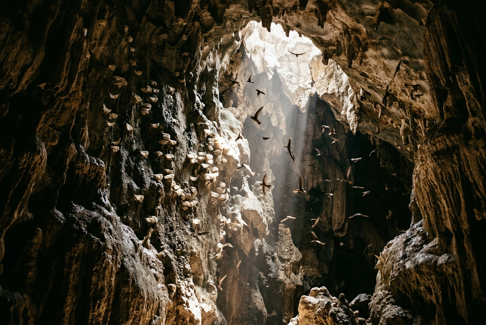

เกรดรังนกธรรมชาติและรังนกเลี้ยงแตกต่างกันอย่างไร?
สารบัญบทความ6 หัวข้อ
รังนกที่วางจำหน่ายในท้องตลาดมีที่มาหลักสองแหล่ง คือรังนกจากถ้ำตามธรรมชาติ และรังนกจากอาคารที่สร้างขึ้นเพื่อให้นกแอ่นเข้ามาอาศัย ทั้งสองแบบเกิดจากน้ำลายของนกแอ่นกินรังเหมือนกัน แต่สภาพแวดล้อมและวิธีเก็บที่ต่างกันทำให้ลักษณะ เกรด และราคาแตกต่างกันอย่างเห็นได้ชัด บทความนี้รวบรวมประเด็นสำคัญไว้ให้เข้าใจได้ในที่เดียว
ที่มา: ถ้ำธรรมชาติกับบ้านนก
รังนกที่นำมาบริโภคได้สร้างขึ้นจากน้ำลายของนกแอ่นบางชนิดในสกุล Aerodramus โดยชนิดที่มีความสำคัญทางเศรษฐกิจมากที่สุดคือ นกแอ่นกินรัง (Aerodramus fuciphagus) ซึ่งสร้างรังสีขาวค่อนข้างสะอาด รองลงมาคือ นกแอ่นรังดำ (Aerodramus maximus) ซึ่งมีขนนกปนอยู่ในเนื้อรังจำนวนมาก นกทั้งสองชนิดอาศัยอยู่ในพื้นที่ชายฝั่งและเกาะต่าง ๆ ของเอเชียตะวันออกเฉียงใต้
รังนกธรรมชาติ หรือที่นิยมเรียกว่า รังนกถ้ำ มาจากถ้ำหินปูนบนเกาะและหน้าผาริมทะเล ซึ่งเป็นถิ่นอาศัยดั้งเดิมของนกแอ่นมาหลายพันปี ภายในถ้ำมีความมืด ความชื้นสูง และอุณหภูมิค่อนข้างคงที่ นกจะสร้างรังเกาะติดกับผนังหินหรือเพดานถ้ำในจุดที่สัตว์ผู้ล่าเข้าถึงได้ยาก ในประเทศไทย การเก็บรังนกจากถ้ำตามธรรมชาติอยู่ภายใต้การควบคุมของกฎหมายว่าด้วยรังนกอีแอ่น และต้องได้รับอนุญาตจากหน่วยงานรัฐ
รังนกบ้าน หรือ รังนกเลี้ยง มาจากอาคารที่ออกแบบให้เลียนแบบสภาพภายในถ้ำ โดยทั่วไปเป็นอาคารคอนกรีตหลายชั้น มีช่องให้นกบินเข้าออก ภายในติดตั้งไม้ระแนงสำหรับให้นกเกาะสร้างรัง ควบคุมแสง ความชื้น และอุณหภูมิ และมักเปิดเสียงเรียกนกเพื่อดึงดูดนกแอ่นที่หากินอยู่ในบริเวณใกล้เคียง ปัจจุบันรังนกบ้านเป็นแหล่งผลผลิตหลักของภูมิภาค โดยอินโดนีเซียเป็นประเทศผู้ผลิตรายใหญ่ที่สุด และผลผลิตส่วนใหญ่ของโลกมาจากบ้านนกมากกว่าถ้ำ

ควรเข้าใจไว้ตั้งแต่ต้นว่า นกที่สร้างรังในบ้านนกไม่ใช่นกที่ถูกขังหรือถูกเลี้ยงแบบสัตว์ในฟาร์ม แต่เป็นนกแอ่นที่บินเข้าออกได้อย่างอิสระและออกหากินแมลงตามธรรมชาติทุกวัน คำว่า "รังนกเลี้ยง" จึงหมายถึงการจัดสภาพแวดล้อมให้นกเลือกเข้ามาทำรัง มากกว่าการเลี้ยงดูนกโดยตรง
วิธีเก็บและฤดูกาล
การเก็บรังนกถ้ำเป็นงานที่ต้องใช้ทักษะเฉพาะและมีความเสี่ยงสูง คนเก็บรังต้องปีนไม้ไผ่ เชือก หรือนั่งร้านขึ้นไปยังผนังถ้ำที่สูงหลายสิบเมตร ในสภาพแสงน้อยและพื้นผิวลื่น แล้วใช้เครื่องมือปลายแหลมแซะรังออกจากผนังหิน ความยากลำบากนี้เป็นเหตุผลสำคัญประการหนึ่งที่ทำให้รังนกถ้ำมีต้นทุนสูง
การเก็บรังนกบ้านทำได้สะดวกกว่ามาก เพราะรังเกาะอยู่บนไม้ระแนงภายในอาคาร ผู้ดูแลสามารถใช้บันไดเข้าถึงได้ ตรวจสอบสถานะของแต่ละรังได้ใกล้ชิด และวางแผนเลือกเก็บเฉพาะรังที่ลูกนกบินออกไปแล้ว ทำให้ควบคุมทั้งความสะอาดของรังและผลกระทบต่อนกได้ดีกว่า
ในด้านฤดูกาล การเก็บรังนกทั้งสองแบบมักกำหนดตามวงจรการผสมพันธุ์ของนก ซึ่งแตกต่างกันไปตามพื้นที่และสภาพอากาศ โดยทั่วไปอาจแบ่งรังที่เก็บได้ตามจังหวะเวลาดังนี้
- รังที่เก็บก่อนวางไข่ — รังใหม่ สะอาด มีขนและสิ่งสกปรกน้อย แต่การเก็บในช่วงนี้บังคับให้นกต้องสร้างรังใหม่ และอาจรบกวนการขยายพันธุ์หากทำบ่อยเกินไป
- รังที่เก็บหลังลูกนกบินออกจากรัง — มีขนนก มูล และร่องรอยการใช้งานมากขึ้น ต้องทำความสะอาดมากกว่า แต่เป็นแนวทางที่เอื้อต่อการรักษาประชากรนกมากที่สุด
- รังที่เก็บในรอบท้าย ๆ ของฤดู — นกที่สร้างรังซ้ำหลายครั้งอาจผลิตรังที่บางลงหรือมีขนาดเล็กลง ซึ่งส่งผลต่อการจัดเกรด
สำหรับถ้ำธรรมชาติ จำนวนรอบการเก็บต่อปีมักถูกกำหนดโดยข้อบังคับและแผนการจัดการของพื้นที่ ส่วนบ้านนกมีความยืดหยุ่นมากกว่า แต่ผู้ประกอบการที่คำนึงถึงความยั่งยืนมักเลือกเก็บเฉพาะรังที่ลูกนกบินออกไปแล้วเป็นหลัก
รูปทรง สี และสิ่งเจือปน
รูปทรง
รังนกบ้านมักมีรูปทรงสม่ำเสมอ เป็นทรงครึ่งถ้วยหรือทรงใบเรือที่ด้านหลังแบนราบ เพราะนกสร้างรังเกาะบนไม้ระแนงที่เรียบและเป็นมุมฉาก ส่วนที่ยึดติดกับไม้เรียกว่า ตีนรัง หรือ ขารัง ซึ่งมีความหนาและแข็งกว่าส่วนอื่น ขณะที่รังนกถ้ำมีรูปทรงหลากหลายและไม่สม่ำเสมอตามพื้นผิวหินที่ขรุขระ บางรังมีลักษณะคล้ายถ้วยลึก บางรังแบนหรือบิดเบี้ยว และมักแตกหักระหว่างการแซะออกจากผนังมากกว่า
สี
รังนกบ้านส่วนใหญ่มีสีขาวนวลถึงขาวอมเหลืองอ่อน และค่อนข้างสม่ำเสมอทั้งล็อต รังนกถ้ำมีช่วงสีที่กว้างกว่า ตั้งแต่ขาวขุ่น เหลือง ทอง ไปจนถึงส้มแดง ความแตกต่างนี้เชื่อกันว่าเกี่ยวข้องกับสภาพแวดล้อมภายในถ้ำ เช่น แร่ธาตุจากผนังหินและก๊าซที่เกิดจากมูลนกสะสม มากกว่าจะเป็นผลจากตัวนกเอง รายละเอียดเรื่องสีของรังนกอธิบายเพิ่มเติมไว้ในบทความเรื่องประเภทและเกรดของรังนก
สิ่งเจือปน
รังนกถ้ำโดยทั่วไปมีสิ่งเจือปนมากกว่า ทั้งขนนก เศษหิน ฝุ่นแร่ และคราบจากผนังถ้ำ โดยเฉพาะรังของนกแอ่นรังดำซึ่งมีขนปนอยู่ในเนื้อรังจำนวนมาก ต้องใช้เวลาและแรงงานในการคัดแยกนานกว่า รังนกบ้านที่เก็บจากอาคารซึ่งดูแลความสะอาดอย่างสม่ำเสมอมักมีสิ่งเจือปนน้อยกว่า แต่ก็ยังมีขนนกและมูลปนอยู่ได้ ขึ้นกับการจัดการของแต่ละแห่ง
| หัวข้อ | รังนกถ้ำ (ธรรมชาติ) | รังนกบ้าน (บ้านนก) |
|---|---|---|
| แหล่งที่มา | ถ้ำหินปูนบนเกาะและหน้าผาริมทะเล | อาคารที่สร้างเลียนแบบสภาพถ้ำ |
| วิธีเก็บ | ปีนผนังถ้ำสูง ใช้แรงงานทักษะสูง มีความเสี่ยง | ใช้บันไดภายในอาคาร ควบคุมได้ง่ายกว่า |
| การกำหนดรอบเก็บ | ตามข้อบังคับและแผนจัดการพื้นที่ | ยืดหยุ่น ตรวจสถานะรังได้รายรัง |
| รูปทรง | ไม่สม่ำเสมอ แตกหักง่ายระหว่างเก็บ | ทรงครึ่งถ้วย ด้านหลังแบน ค่อนข้างสม่ำเสมอ |
| สี | หลากหลาย ขาว เหลือง ทอง ถึงส้มแดง | ส่วนใหญ่ขาวนวลถึงขาวอมเหลือง |
| สิ่งเจือปน | มักมีขน เศษหิน และแร่ธาตุมากกว่า | มักน้อยกว่า ขึ้นกับการดูแลอาคาร |
| ปริมาณในตลาด | น้อย จำกัดตามธรรมชาติ | เป็นผลผลิตส่วนใหญ่ของตลาด |
เป็นแนวโน้มทั่วไปเพื่อการเปรียบเทียบ ลักษณะจริงแตกต่างกันตามพื้นที่ ชนิดนก และการจัดการของแต่ละแหล่ง
เนื้อสัมผัสหลังแช่น้ำและการปรุง
เมื่อนำรังนกไปแช่น้ำ เส้นใยจากน้ำลายจะดูดซับน้ำและพองตัวขึ้น ผู้คนในวงการมักสังเกตว่ารังนกถ้ำมีเนื้อแน่นและหนากว่า พองตัวน้อยกว่าเล็กน้อยเมื่อเทียบน้ำหนักแห้งเท่ากัน และยังคงความกรุบหรือความหนึบของเส้นได้ดีแม้ผ่านการตุ๋นนาน ส่วนรังนกบ้านมักพองตัวได้มากกว่า เนื้อนุ่มและเนียน เส้นแยกตัวได้ชัด และสุกเร็วกว่า
ความต่างนี้อาจเกิดจากหลายปัจจัยร่วมกัน เช่น อายุของรัง ความชื้นและแร่ธาตุในสภาพแวดล้อม รวมถึงวิธีทำความสะอาดและทำแห้ง อย่างไรก็ตาม ข้อสังเกตเหล่านี้เป็นแนวโน้มที่ได้จากประสบการณ์ของผู้ค้าและผู้บริโภค ไม่ใช่กฎตายตัว รังนกบ้านคุณภาพดีบางแหล่งอาจมีเนื้อแน่นไม่แพ้รังนกถ้ำ และรังนกถ้ำบางล็อตก็อาจมีเนื้อบางได้เช่นกัน

การจัดเกรดและตำแหน่งราคา
การจัดเกรดรังนกในทางการค้ามักพิจารณาจากหลายองค์ประกอบพร้อมกัน ได้แก่ รูปทรงและความสมบูรณ์ของรัง ขนาด ความหนาของเนื้อรัง สี ระดับความสะอาด ปริมาณขนหรือสิ่งเจือปนที่เหลือ และความชื้น ทั้งรังนกถ้ำและรังนกบ้านใช้หลักการคล้ายกัน แต่เนื่องจากรังนกถ้ำมีรูปทรงไม่สม่ำเสมอและแตกง่าย สัดส่วนของรังที่ได้เกรดรังเต็มจึงมักต่ำกว่า
| กลุ่มเกรด | ลักษณะโดยทั่วไป | พบบ่อยใน |
|---|---|---|
| รังเต็มเกรดพรีเมียม | รังสมบูรณ์ ขนาดใหญ่ เนื้อหนา สีสม่ำเสมอ สะอาดมาก | รังนกบ้านคัดพิเศษ และรังนกถ้ำจำนวนจำกัด |
| รังเต็มทั่วไป | รังสมบูรณ์หรือเกือบสมบูรณ์ อาจมีขนาดเล็กหรือเนื้อบางกว่า | รังนกบ้านเป็นส่วนใหญ่ |
| รังแตกหรือรังชิ้น | ชิ้นส่วนของรังที่แตกระหว่างเก็บหรือทำความสะอาด | ทั้งสองแหล่ง โดยเฉพาะรังนกถ้ำ |
| รังเส้น | เส้นรังนกที่แยกออกมาระหว่างการทำความสะอาด | ทั้งสองแหล่ง |
| ตีนรังหรือขารัง | ส่วนที่ยึดติดกับไม้หรือผนัง เนื้อหนาและแข็ง | รังนกบ้านเป็นส่วนใหญ่ |
ชื่อเรียกและเกณฑ์การแบ่งเกรดแตกต่างกันไปตามผู้ค้าและตลาด ไม่มีมาตรฐานกลางที่ใช้ร่วมกันทั้งหมด
ในด้านราคา รังนกถ้ำมักถูกวางตำแหน่งในระดับสูงกว่ารังนกบ้านที่มีเกรดใกล้เคียงกัน เหตุผลหลักคือปริมาณที่มีจำกัด ต้นทุนแรงงานและความเสี่ยงในการเก็บ ขั้นตอนทำความสะอาดที่ใช้เวลานานกว่า รวมถึงความเชื่อของผู้บริโภคบางกลุ่มว่ารังนกจากธรรมชาติมีคุณค่ามากกว่า รังนกถ้ำสีทองหรือสีส้มแดงมักถูกมองว่าเป็นสินค้าหายากและมีราคาสูงเป็นพิเศษ ส่วนรังนกบ้านมีช่วงราคากว้าง ตั้งแต่รังเส้นและรังชิ้นที่เข้าถึงได้ง่าย ไปจนถึงรังเต็มคัดพิเศษ
ความยั่งยืนและข้อพิจารณาเชิงจริยธรรม
ถ้ำธรรมชาติเป็นระบบนิเวศที่เปราะบาง การเก็บรังบ่อยเกินไปหรือเก็บในช่วงที่นกกำลังวางไข่และเลี้ยงลูกอาจทำให้ประชากรนกลดลงอย่างต่อเนื่อง ในอดีตหลายพื้นที่ในภูมิภาคเคยประสบปัญหาจำนวนนกแอ่นในถ้ำลดลงจากการเก็บเกินขนาดและการลักลอบเก็บ การกำกับดูแลโดยรัฐและการกำหนดช่วงเวลางดเก็บจึงมีความสำคัญต่อการอนุรักษ์
บ้านนกช่วยลดแรงกดดันต่อถ้ำธรรมชาติ เพราะผลิตรังนกได้ในปริมาณมากโดยไม่ต้องรบกวนถิ่นอาศัยดั้งเดิม และเปิดโอกาสให้เก็บรังหลังจากลูกนกบินออกไปแล้วได้อย่างแม่นยำ แต่บ้านนกก็มีประเด็นที่ต้องพิจารณาเช่นกัน เช่น เสียงเรียกนกที่อาจรบกวนชุมชน การตั้งอาคารในเขตเมืองซึ่งต้องเป็นไปตามข้อกำหนดผังเมืองและกฎระเบียบท้องถิ่น การจัดการสุขอนามัยของอาคาร และการดูแลพื้นที่หากินของนก เช่น ป่าชายเลนและนาข้าว ซึ่งเป็นแหล่งแมลงอาหารหลัก
- เลือกผู้ผลิตที่ระบุแหล่งที่มาได้ชัดเจนและอธิบายแนวทางการเก็บรังได้
- ให้ความสำคัญกับรังที่เก็บหลังลูกนกบินออกจากรังแล้ว
- หลีกเลี่ยงสินค้าที่อ้างว่ามาจากถ้ำแต่ไม่สามารถแสดงที่มาที่ถูกต้องตามกฎหมายได้
- ตระหนักว่าพื้นที่หากินตามธรรมชาติของนกมีความสำคัญไม่น้อยไปกว่าแหล่งทำรัง
แหล่งข้อมูลและการอ้างอิง
- กรมอุทยานแห่งชาติ สัตว์ป่า และพันธุ์พืช (ข้อมูลทั่วไปเกี่ยวกับนกแอ่นและการคุ้มครองถิ่นอาศัย)
- กฎหมายว่าด้วยรังนกอีแอ่นของประเทศไทย (ข้อมูลทั่วไป)
- งานวิจัยและบทความทบทวนวรรณกรรมเกี่ยวกับรังนกที่บริโภคได้ในเอเชียตะวันออกเฉียงใต้ (ข้อมูลทั่วไป)
บทความนี้มีวัตถุประสงค์เพื่อให้ความรู้ทั่วไป ข้อมูลที่ระบุว่าเป็น “ข้อมูลตัวอย่าง” ใช้เพื่ออธิบายแนวคิดเท่านั้น ไม่ใช่สถิติจริง หากต้องการข้อมูลเพื่อการตัดสินใจทางธุรกิจหรือสุขภาพ ควรปรึกษาผู้เชี่ยวชาญหรือหน่วยงานที่เกี่ยวข้อง